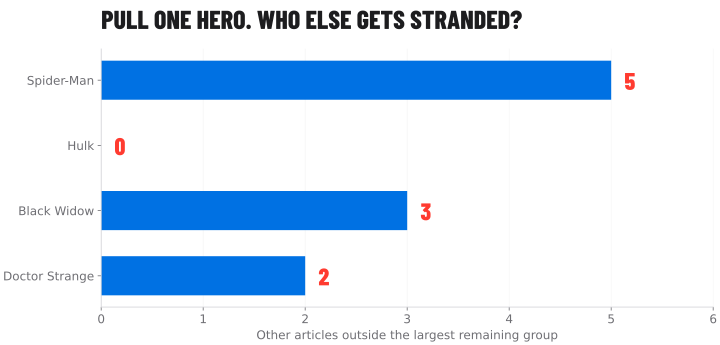
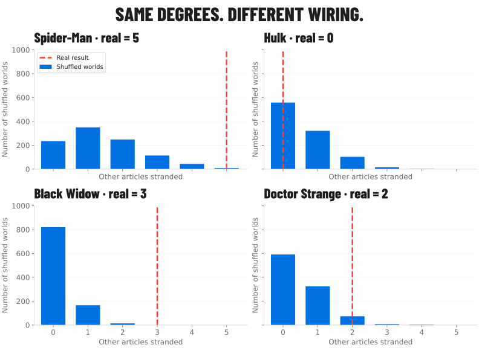

Loading the frozen snapshot…
Week 2 · Models & null models · Connections and counterfactuals
One article.
Five lost connections.
A busy station is not always a fragile station. Close one and discover who can no longer get home.
MARVEL TRANSIT AUTHORITY / SERVICE BOARD
First, predict the disruption.
The comparison that matters
Same degrees. Different wiring.
The benchmark rewires the 277-station core while preserving each station’s degree. Each starting network must be connected. Then the same station is removed.
The 1,000 recorded draws are a degree-controlled benchmark, not a probability of real-world failure. “Stranded” means outside the largest remaining component.
The interchange map
16 hubs · schematic · undirectedThis is a readable overview of the 16 biggest interchanges. Select a line to follow its actual links. The full journey planner below includes every article.
Positions are not geography. Line colours are drawing aids, not detected communities. The map intentionally omits smaller stations; no full-network conclusion is inferred from this overview.
Where would you like to go?
Full 303-article plannerThe planner respects the active closure after its result is revealed. Restore service to compare. It uses breadth-first search; every hop is a real link in the selected graph.
The post · Week 2 · Models & null models
Pull one hero. Who else gets stranded?
What we asked
Does an article’s link count tell us how much the network falls apart when that article disappears? And more generally: of all the things we can measure about this network, which ones survive having its wiring shuffled — and what do the survivors mean?
What we did
We took the 277-article connected core (1,421 undirected pairs), removed each article in turn and counted the others left outside the largest remaining group. Then we rewired the core 1,000 times, keeping every article’s degree and starting connected, and removed the same four articles in each rewired world. Then we widened it: twelve quantities on the whole 303-article snapshot, each tested against 1,000 degree-preserving shuffles and 1,000 random G(n, m) networks, reported as a z-score and an empirical p-value.
What surprised us
The core mostly holds. Hulk, with 65 neighbours, strands nobody. Black Widow, with 25, strands three. Spider-Man strands five, and only 9 of the 1,000 degree-preserving rewires do that badly. The damage sits in the specific wiring, not in the degree.
Then the shuffle test took several of our favourite facts away. Marvel’s short paths and its hub-avoiding hubs are both exactly what the degree sequence already implies. Its triangles are not. And exactly two of 303 characters are never out-linked by a friend: Spider-Man, with 106 links, and Radian, with 6.

Compared with 1,000 rewired worlds

As a shuffle test: Spider-Man strands 5 against a shuffle mean of 1.41, empirical p = 0.010; Black Widow strands 3 against 0.19, p = 0.001 — no rewired world managed more than 2. Doctor Strange’s 2 against 0.51 gives p = 0.086, and Hulk’s 0 against 0.58 is the most ordinary outcome there is (p = 1.0).
We are deliberately quoting p and not z here. These are small integer counts with a hard floor at zero, so their null distributions are visibly skewed rather than normal, and a z-score assumes a bell. Spider-Man’s nominal z is +3.1 and Black Widow’s is +6.5, which would overstate both; the histograms above are the honest reading. The z-scores in the table further down are for global averages, where the central limit theorem earns them.
Shuffle-test everything
12 quantities · 2 nulls · 1,000 draws eachThe rewiring above is a null model, so we may as well use it properly. A null model is not a theory of how the network came to be. It is a picture of what “nothing interesting going on” would look like: keep the parts of the network you are willing to call boring, scramble everything else, and see whether reality still stands out.
The catch is that “boring” is a choice, and the choice decides the answer. So we ran the whole 303-article snapshot against two nulls, 1,000 draws each, and shuffle-tested twelve quantities.
Null A · the degree-preserving shuffle
Take the real network and rewire A–B and C–D into A–D and C–B, 28,680 times over. Every article keeps its exact degree; who links to whom is scrambled. Spider-Man still has 106 links and the 17 isolates still have none — degree zero cannot gain a link this way.
Keeps: n, m, every degree. Destroys: everything else.
Null B · random G(n, m)
Throw the wiring away entirely: 303 nodes, 1,434 links, every link between a uniformly random pair. Degrees are redrawn by chance, so the hubs vanish and so do the isolates — with an average degree of 9.5, chance almost never leaves an article unlinked.
Keeps: n and m. Destroys: the degree sequence too.
![Six panels, each with two histograms of 1,000 null draws and a dashed line at the real value. Clustering: the real 0.307 sits far right of both nulls. The friendship paradox: the real 24.22 sits inside the shuffle distribution and far right of the random one. Chance the friend is at least as linked: the real 0.753 sits just left of the shuffle. Islands: the real 19 sits at the top edge of a shuffle distribution concentrated on 18, while the random null gives 1. Distances: the real 2.674 sits just right of the shuffle and left of the random null. Degree assortativity: the real minus 0.098 sits at the right edge of the shuffle distribution, while the random null centres on zero.](../../../weeks/week02/figures/null_survivors_light.svg)
The whole table
| Quantity | Real | Shuffle | z | p | G(n, m) | z |
|---|---|---|---|---|---|---|
| Average clustering C | 0.307 | 0.143 | +19.8 | 0.001 | 0.032 | +93.9 |
| Transitivity | 0.182 | 0.115 | +15.6 | 0.001 | 0.031 | +58.4 |
| Triangles | 1,839 | 1,158 | +15.6 | 0.001 | 142 | +142.8 |
| Islands (connected components) | 19 | 18.04 | +5.0 | 0.039 | 1.02 | +131.6 |
| Largest component | 277 | 285.9 | −23.3 | 0.001 | 303.0 | −190.2 |
| Average distance in the largest component | 2.674 | 2.631 | +2.9 | 0.005 | 2.778 | −24.0 |
| Degree assortativity | −0.098 | −0.120 | +2.0 | 0.024 | −0.008 | −3.5 |
| Mean degree at the end of a random link | 22.08 | 22.08 | — | — | 10.43 | +152.3 |
| Mean degree of a random character’s random friend | 24.22 | 24.19 | +0.1 | 0.469 | 10.44 | +168.5 |
| Chance your random friend is at least as linked | 0.753 | 0.763 | −3.5 | 0.001 | 0.635 | +30.7 |
| Characters no friend out-links | 2 | 1.26 | +1.3 | 0.205 | 16.68 | −5.1 |
| Biggest hub’s share of all link ends | 3.70% | 3.70% | — | — | 0.67% | +57.7 |
Two rows have no z and no p. The mean degree at the end of a random link is ⟨k²⟩/⟨k⟩, and the hub’s share is 106 / 2,868: both are functions of the degree sequence alone, so the degree-preserving shuffle reproduces them to every decimal place across all 1,000 draws. The standard deviation is exactly zero and a z-score would be a division by it. That is not a broken measurement — it is the null telling you the quantity carries no information beyond the degrees.
What died, and what survived
Four of the twelve are unmoved by the shuffle, which means the real value is what the degree sequence alone already implies. The disassortativity is the clearest casualty: a naive reading of −0.098 says “Marvel hubs avoid each other,” but the shuffle produces −0.120 on average, so the real network is if anything less hub-averse than chance-with-these-degrees (z = +2.0). Simple graphs with a 106-link hub cannot help being disassortative; there are not enough other hubs to go around.
The distances go the same way. 2.674 hops across the largest component looks impressively small, and it is — but the shuffle averages 2.631, so the real network is a hair longer than chance, not shorter. Short paths are not the finding here. They never are: reach multiplies by ⟨k⟩ per step, so anything this dense is a few hops wide whether or not anyone designed it.
What does survive is triangles. Clustering is 0.307 against a shuffle mean of 0.143 with a standard deviation of 0.008 — nearly twenty standard deviations out, and not one of the 1,000 shuffles came within reach of it (the highest was 0.171). The real network has 1,839 triangles where the shuffle expects 1,158. Something is closing triangles that the degree sequence does not explain, and the obvious candidate is that Wikipedia editors write in teams and eras: the Avengers cite each other, the X-Men cite each other, and a link tends to arrive alongside the links around it.
The same number, two nulls, two conclusions
Clustering is where the choice of null does visible damage. Against random G(n, m) the surplus is 0.307 versus 0.032 — a factor of ten, which invites the sentence “so the clustering comes from the hubs.” Against the degree-preserving shuffle the surplus is 0.307 versus 0.143 — a factor of 2.1. The hubs really do account for most of the gap the first null found. But a large gap remains after they are controlled for, so the hubs are not the explanation. The first null does not just give a bigger number; it gives the wrong answer.
The island count is the same trap in the other direction. Against random G(n, m), 19 components looks like one of the most extreme things about this network (z = +131.6), because chance with an average degree of 9.5 essentially always produces a single connected blob. But that “finding” is fake: 18 of the 19 pieces are 17 zero-degree articles plus the rest, and any null that keeps the degree sequence gets them for free. Only the nineteenth piece — the nine-character Strikeforce: Morituri island — is a real surprise, and against the honest null it is a modest one (19 versus 18.04, p = 0.039). Meanwhile the largest component gives it away loudly: 277 real against 285.9 shuffled, z = −23.3, because in the shuffled worlds those nine characters almost always get pulled into the giant.
The paragraph an AI should write about our clustering
The Marvel network's average clustering is 0.307. Against 1,000 degree-preserving shuffles of the same network, which hold every article's degree fixed and scramble only who links to whom, the expected value is 0.143 (sd 0.008); the real value is 19.8 standard deviations above it and exceeds all 1,000 shuffles (p ≤ 0.001). The heavy-tailed degree sequence therefore accounts for roughly half of the surplus over an Erdős–Rényi baseline and cannot account for the rest, so the triangle surplus is a property of the wiring and not of the hubs.
Everyone here has more famous friends than you
The friendship paradox · 286 linked articlesPick a Marvel character with at least one link. On average they have 10.0 links. Now pick one of their friends at random: that friend has 24.2. Three times out of four (75.3%) the friend is at least as linked as the character you started from. Nobody is lying; picking a friend is degree-biased sampling, because a hub is a friend to many and therefore keeps getting picked.
This is the one quantity the shuffle cannot touch. The degree-preserving null lands on 24.19 against the real 24.22 — z = +0.1, p = 0.47. Push it to the pure edge-sampled form, ⟨k²⟩/⟨k⟩, and the null reproduces the real 22.08 to seven digits across every draw, because that expression reads only the degree sequence. So the paradox is not a fact about Marvel's wiring at all. It is a fact about the spread of its degrees, and it would survive any rewiring you can imagine that leaves the degrees alone.
It does not need hubs to exist, only variance. Under random G(n, m), where the biggest article has around 19 links, the paradox weakens but refuses to die: 10.44 for a random friend against 9.47 for a random character. A Poisson distribution still has a variance, and a variance is all the paradox asks for.
The two characters nobody out-links
The paradox has an edge case worth chasing: is there anyone whose friends are never better connected than they are? Across all 286 linked articles, exactly two.
Spider-Man is the obvious one: he is the biggest hub in the network, so by definition nobody out-links him. Radian is the joke. Radian has six links and sits on the nine-character Strikeforce: Morituri island, where the ceiling is six. He is unbeatable because his world is nine articles wide. Two characters, seventeen times apart in degree, both unbeaten for exactly the same reason: each is the top of the only pond he can see.
And that pair is not a finding either — the shuffle produces 1.26 unbeaten characters on average (z = +1.3, p = 0.205), because Spider-Man is unbeatable in every shuffled world too. What the shuffle does tell us is where the second one comes from: Radian is only unbeaten because his island stays an island. Under random G(n, m), which dissolves every island, the count jumps to 16.7 — for the opposite reason, that a network with no hubs has many small local maxima.
The takeaway
Degree tells you how busy. Wiring tells you how fragile.
Black Widow strands three articles with only 25 neighbours. Doctor Strange strands two with 57. The ordering changes when the question shifts from “how many neighbours?” to “who depends on this connection?”
The wider test says the same thing about the whole network at once. Clustering, transitivity and triangles all sit far outside anything a degree-preserving shuffle produces. The short paths, the hub-avoiding hubs and the friendship paradox all sit comfortably inside it.
Download all 277 removal results (CSV) Download the shuffle-test table (JSON)Evidence and details.
What the data means
303 article entries and 1,784 directed links from the course’s frozen 26 August 2026 snapshot. A link means one article links to another within this roster. It does not measure friendship, hero strength, popularity or the whole Marvel universe.
Download the snapshot and metrics (JSON)Limits of the experiment
Only within-roster links are observed. Closing a station means deleting an article node, not predicting a real outage. The route drawn is one shortest path, not necessarily the only one. The benchmark holds degrees fixed but changes other structure.
Methods and reproducibility
Closures operate on the simple undirected 277-node, 1,421-edge main component. After one closure, 276 nodes remain. All four displayed results are recomputed in-browser. The recorded benchmark has 1,000 connected degree-preserving rewires per tested article; each accepts 20 swaps per edge, with a separate 50-swaps-per-edge sensitivity run. The 16-hub drawing uses an edge-disjoint greedy path decomposition. Route finding includes all 303 nodes and explicitly selects directed or undirected travel.
The twelve-quantity shuffle test is a separate run on a wider graph:
the whole 303-article snapshot as simple undirected links, and
deliberately not conditioned on connectedness, which is what
lets the number of islands vary under the null. 1,000 draws per null,
20 successful swaps per link for the degree-preserving one and
gnm_random_graph(303, 1434) for the random one. Every
draw asserts that the degree sequence is unchanged before it is
measured. Empirical tails are (1 + draws at least as extreme) /
(1 + draws), one-sided and unadjusted across the twelve quantities,
so treat any single p near 0.05 as a hint rather than a result. A
finite swap chain approximates the null ensemble rather than sampling
it uniformly.
Analysis and source code on GitHub. All experiments run locally in your browser; the frozen data is never edited.
AI use and authorship
Built with AI assistance for interface design, programming, explanation drafts and test construction. Metrics come from the provided snapshot and reproducible analysis; the games and metaphors are authored presentation choices. Numerical checks compare independent Python and browser implementations. The free-play tools are not course hand-ins.